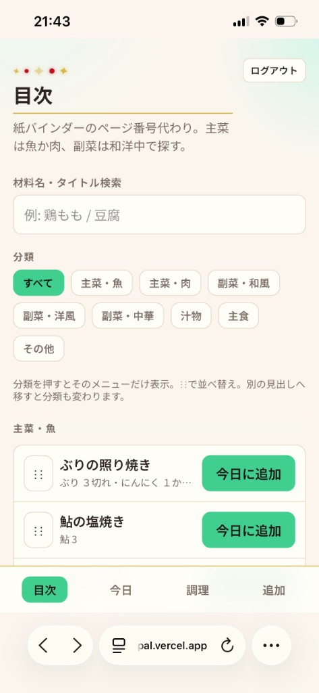
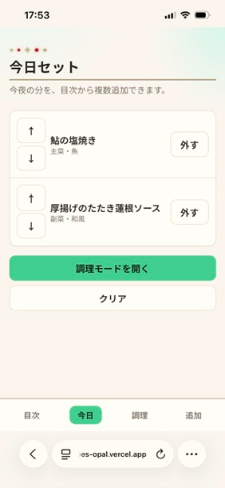
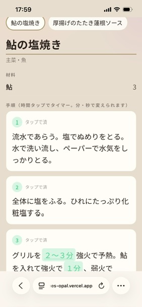
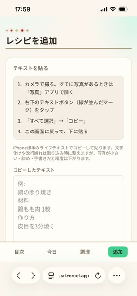
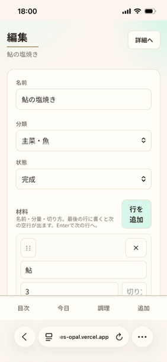
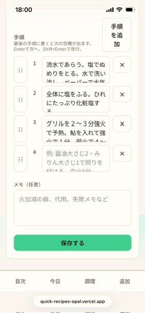
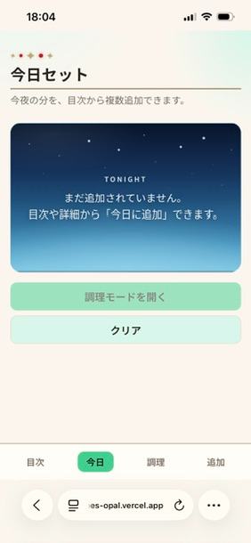

発表用。左が画面スクショ、右が吹き出し説明。ブラウザで開いてスライド用に切り抜くか、印刷→PDFでも使えます。


紙を何枚も抜き差ししなくてよい。順番の入れ替え・外しもここだけ。
セットした内容のまま、キッチン向けの大きい表示へ進む。

今夜の複数品を、タブで切り替え。別の紙が目に入らない。
作業台のそばのスマホで読める。「レンジフード横の紙」を見上げなくてよい。
分数をタップで作動 → キッチンタイマー不要。
並行する作業ごとにタイマーを同時に回せる。短縮・延長も可。

ネットや写真の文字を貼って下書き化。手書きの「時間をかけたのに」を下げる入口。
思いついたら名前だけ置ける。完成前でも一覧に残せる。



使い方のヒント：ブラウザでこのファイルを開き、各セクションを画面収録／切り抜きしてスライドへ。
本物のスクショに差し替える場合は、同じフォルダに画像を置いてもらえれば、吹き出し位置を合わせて作り直します。